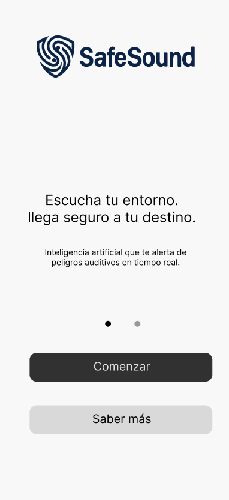
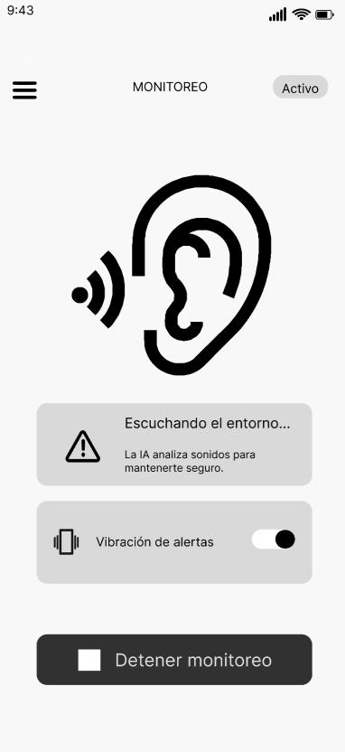
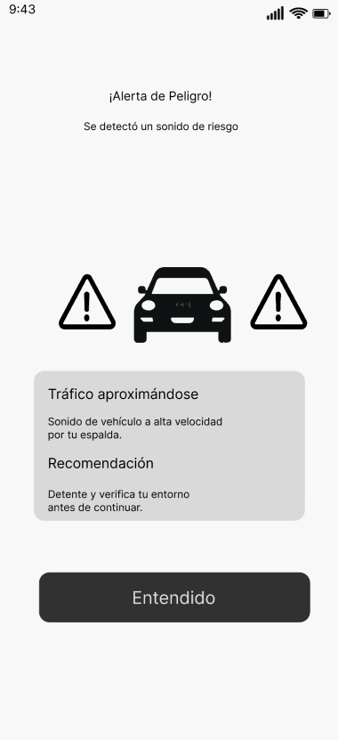
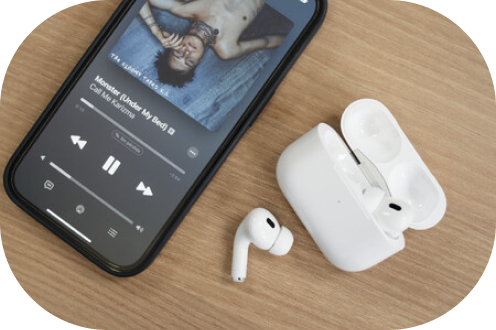
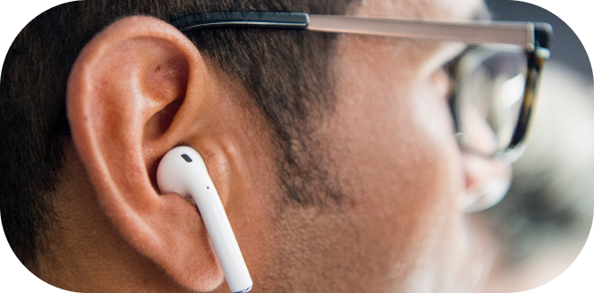

SafeSound detecta sonidos peligrosos mientras usas audífonos y te alerta en tiempo real mediante Inteligencia Artificial.
Descubre cómo SafeSound mejora tu seguridad mientras disfrutas tu música.
Reduce el riesgo de accidentes al detectar sonidos peligrosos mientras caminas usando audífonos en entornos urbanos.
Disfruta tu música, podcasts o llamadas sin perder completamente la conciencia de lo que ocurre a tu alrededor.
Recibe alertas rápidas mediante vibración, sonidos o señales visuales cuando la aplicación detecte riesgos cercanos.
SafeSound identifica en tiempo real bocinas, sirenas, frenadas y otros sonidos de riesgo mientras utilizas audífonos en la calle.
Cuando la aplicación detecta un peligro cercano, disminuye el volumen de tu música para que puedas reaccionar rápidamente.
Cuando la aplicación detecta un peligro cercano, disminuye el volumen de tu música para que puedas reaccionar rápidamente.
Recibe alertas mediante vibración y señales visuales para mantenerte atento sin necesidad de revisar constantemente tu celular.
Activa SafeSound antes de iniciar tu trayecto.
La aplicación analiza el sonido del entorno usando inteligencia artificial en tiempo real.
Si detecta un riesgo cercano, envía alertas inmediatas mediante vibración, sonido o reducción automática del volumen.



“Antes no escuchaba motos ni bicicletas cuando caminaba con audífonos. Ahora me siento mucho más seguro usando SafeSound.”

“La vibración y las alertas rápidas ayudan bastante cuando hay mucho ruido en la calle.”

“Me gusta que la app no pause completamente mi música y aun así pueda alertarme de peligros.”
Mantente seguro mientras disfrutas tu música descargando SafeSound.
No. SafeSound solo analiza el entorno sonoro en tiempo real para detectar riesgos, sin almacenar audio.
Sí, SafeSound se mantiene activa en segundo plano mientras usas otras apps o escuchas música.
El procesamiento de IA está optimizado para un consumo energético mínimo durante el monitoreo continuo.
Sirenas, bocinas, frenadas bruscas, motores y otras alertas de riesgo en entornos urbanos.